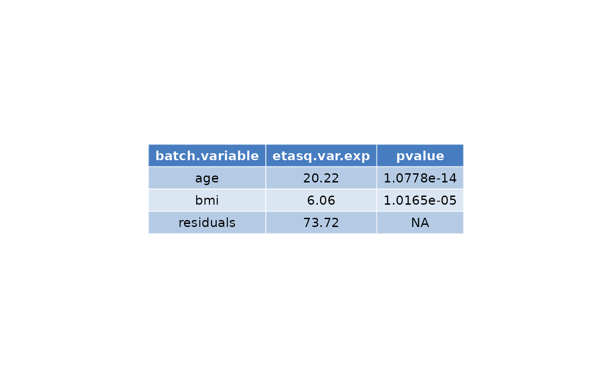

multivariate analysis
multivariate_anova.RdThis function performs a multivariate analysis over a dependent|response and numerous independent|explanatory variable
Examples
## simulate some correlated data
set.seed(1110)
n <- 250
mu <- c(5, 45, 25)
cmat <- matrix(c(1, 0.5, 0.3,
0.5, 1, 0.25,
0.3, 0.25, 1), nrow = 3, byrow = TRUE)
L <- chol(cmat)
Z <- matrix(rnorm(n * 3), nrow = n)
ex_data <- Z %*% L
ex_data <- sweep(ex_data, 2, mu, "+")
colnames(ex_data) = c("outcome","age","bmi")
multivariate_anova(dep = ex_data[,1], indep_df = ex_data[, 2:3])
